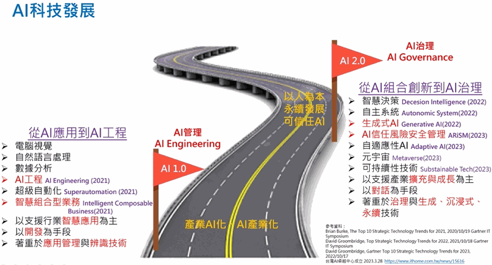

在大家都關注ChatGPT帶給大家的驚奇中，AI 2.0正式來了！2023年是生成式AI元年，台灣正邁向AI 2.0。2018年政府推動「台灣AI行動計畫1.0」，這讓AI從學術界進入產業。「產業AI化、AI產業化」成為行動綱領，各產業運用AI來發展智慧應用，提升效率與創新服務模式。而產業大量運用AI，各種新創公司運用AI發展智慧應用、AI模型及AI工具平台，形成AI產業化。
短短4至5年間，AI技術成為產業發展的基石，AI的發展就從智慧應用進入到重視AI工程管理，讓AI落地與接軌產業，但AI智慧應用也造成問題，AI生成行銷圖片，但也成為造假工具……等，AI的負面效應開始浮現，AI的信任、風險、安全、管理成為重點，可信任AI成為產業應用發展重點，AI正從組合創新到AI治理的發展過程。
Google問世，改變我們網路資料搜尋的習慣，Facebook問世，改變我們人際網路搜尋的習慣，這兩股力量創造如行銷科技(Martech)新產業，依賴這些科技，企業經營從實體延伸到網路。而若網路使用者搜尋可以直接找到需要資訊，不在去點選您的企業連結，這樣網路導流生態改變了，數位人流移動方式改變了，這將有多少產業受衝擊？多少企業經營方法面臨改變？這是破壞式創新，這正在開始。2023年AI 2.0將人類智慧系統化，讓智力像電力一樣隨手可得，超越想像力的未來，正朝我們而來，而我們準備好了嗎？

Ai3 張榮貴董事長針對「ChatGPT、生成式AI來臨的AI 2.0世代」議題專欄文章發表
了解更多歡迎點擊以下網址: